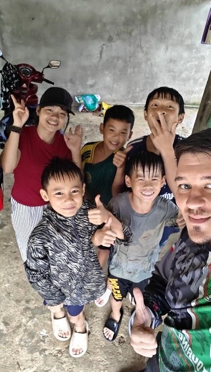
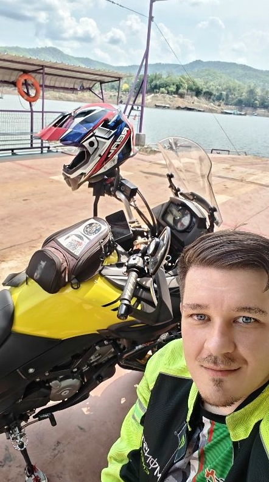
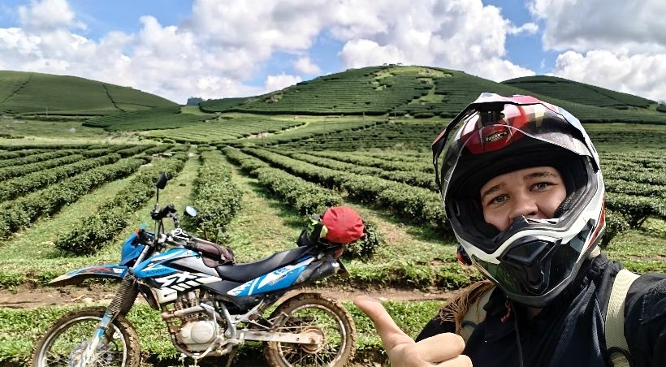

Not really into crowds.
I’d rather take a ride, find a river, get coffee, and talk properly.
I’m Anton — usually somewhere in North Thailand, moving between mountain roads, quiet places, and the next good plan. If you want to explore, practice English, go for a ride, or just get out somewhere better than the city, message me.
Open to friendship, rides, good conversation, and sometimes something more.
About me
Thailand has been my home for 5 years now, and I really feel like I belong here. I'm generally quiet at first, but social once we start talking. I prefer a real connection and a long conversation over a noisy, crowded place.
I value people who are natural and easy to talk with—and people who call me when they actually want to do something or need a hand, not only when they want to drink.
I'm open to meeting local Thai friends, fellow riders, and dating. If you like quiet plans and getting out into nature, we'll probably get along just fine.

What I'm Into
Motorcycles
I ride a Kawasaki Versys X300 and a V-Strom 650 XT—reliable adventure makers. Nothing beats the feeling of the road up north.
Nature & Camping
Mountains, waterfalls, lakes, and jungle viewpoints. My ideal weekend is riding out to Chiang Rai and camping next to a river.
Quiet Drinks & Coffee
Simple plans are the best plans. Good coffee during the day, or a quiet drink at night (maybe with a little SangSom soda to keep things playful).
Language Learning
I try to learn the local language wherever I live because it opens doors and connects people. It's a work in progress.

Exploring the North
I've visited all the provinces in Thailand, but the north is where I spend my time. I move around a lot—you can usually find me somewhere between Mae Hong Son, Uttaradit, Chiang Rai, and Chiang Mai.
I'm always up for small-group trips or spontaneous road trips. If you have a free weekend and a good destination in mind, let me know.

Talk to me
I speak a little Thai, though I can't read it just yet. I really want to learn more! But for deep conversations, I prefer English.
English is actually my third language, so I completely understand how difficult it can feel to speak a foreign language. Please don't be scared to message me, even if your English is simple. We can figure it out together.
You don’t need perfect English to talk to me — mine wasn’t perfect either.
ทักมาเป็นภาษาอังกฤษง่ายๆ ได้นะ (You can message me in simple English)I've made plenty of funny mistakes in Thai myself—like confidently saying the wrong thing when trying to compliment someone or say cheers. It happens to the best of us!
ผมก็กำลังเรียนภาษาไทยอยู่เหมือนกัน (I'm still learning Thai too)Just talk naturally, don't worry about perfect grammar.
ไม่ต้องเกรงใจ (Don't be shy)Let's Make a Plan
Up for a ride, a day trip, language exchange, or just grabbing a coffee? Message me.
มาวางแผนเที่ยวกันเถอะ (Let's make a plan)